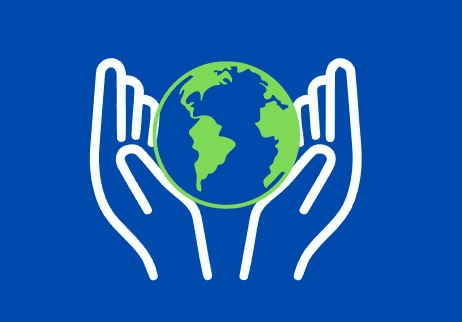

Quem somos?
Somos um grupo de jovens que está envolvido em um projeto para arrecadaçam de itens de limpeza para uma casa de idosos. A iniciativa tem como propósito não apenas fornecer itens essenciais para a higiene e bem-estar dessas populações, mas também sensibilizar a sociedade sobre a importância do envolvimento coletivo em ações solidárias. Através da colaboração de empresas, organizações e indivíduos, acreditamos que podemos fazer a diferença na vida de muitas pessoas que, muitas vezes, enfrentam dificuldades para garantir o básico em suas casas e espaços comunitários. O projeto conta com a doação de produtos como sabão, detergente, desinfetantes, água sanitária e outros itens essenciais para a manutenção de ambientes limpos e seguros. Agradeço desde já o apoio e a confiança de todos os envolvidos, e estou à disposição para mais informações ou esclarecimentos sobre o projeto. Atenciosamente, Ação LimpaNossa rede social
Instagram: @acao-limpa
